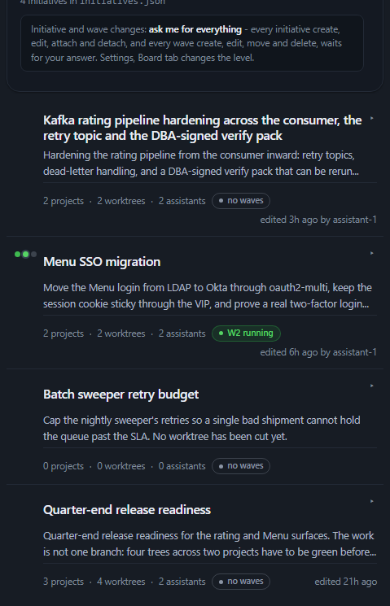
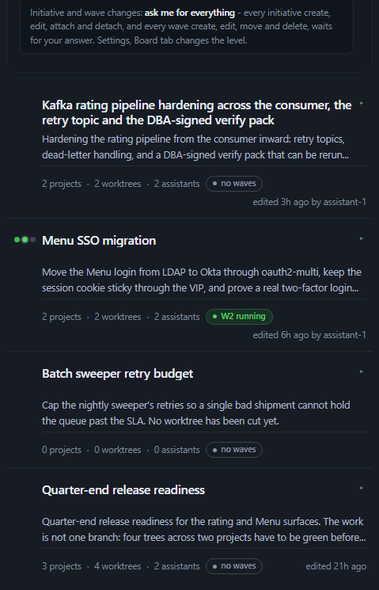
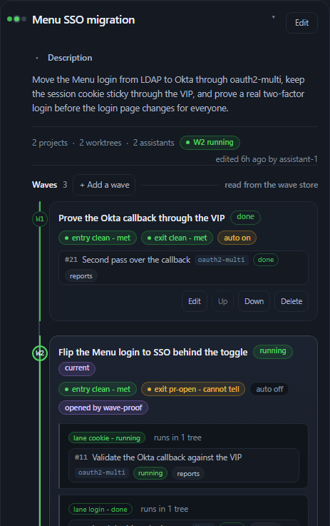
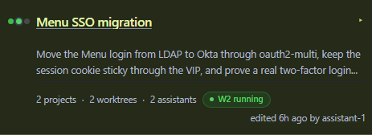

The initiative card's dots sit on its title, keep still when it opens, and can carry a colour
wtgui/read-queue-row-274-first-it-carries-all-2e6057, cut from
9e14dcea (main, 1.163.0). Read queue row 274. Every number below comes from
tools/verify-initiative-card-anchor.mjs (a live gate on a sandboxed panel), run first on the base
build and then on this branch with the same fixture and the same widths. Nothing is quoted from memory and
nothing is eyeballed: the pictures are beside the measurements that scored them.
1. What the row asked for
| the change | the acceptance the row named |
|---|---|
| The coloured dots share the title's own line box, on its optical centre, in a fixed gutter left of it. | A dot/title measurement, on a folded card. |
| The dots stay drawn when a card expands, so the title does not slide left by their width. | A measured title x and y that are IDENTICAL open and closed, at more than one card width. |
| Ctrl+click an initiative's dot or title gives it a theme colour, Shift+click drops it, by the projects' own chooser and persistence rule; the dots' own colours and order are untouched. | One initiative carrying a custom colour that survives a reload, and the projects' colour behaviour unchanged. |
2. Before: the three defects, measured
The same gate was run against the base build (main's 9e14dcea) first, so the red run is
the row's complaint in numbers rather than a description of it.
1. The dots rode above the line. top: calc(var(--tab-s3) + 6px) was a guess at the title's
place from the card's top, and the head button is a 36px centred row, so the title's first line box actually started
8.31px lower. Measured: every dot's centre 8.5px above the title's first-line centre, and
its top 2.32px above the line box entirely.
2. The title jumped on expand. The mark was drawn only on the folded card (glyphHtml was
"" when open) and the open plate's padding was 16px against the folded row's 45px. Measured at a 463px
card: the title went x 45 -> 17 (dx -28) and y 12 -> 17 (dy +5)
on the press that opened it, with no glyph at all on the open card.
3. Ctrl+click folded the card. The title and the dots are inside the card's fold button, so the press was answered by the fold: measured open false -> true, no hue on the card, nothing written to any store.

3. What changed, and where
The gutter, as three tokens
public/style.css:4957-4959 names the geometry once: --init-dot-slot: 27px,
--init-title-gutter: 45px and --init-row-top: calc(var(--tab-s4) + 1px). The folded row
pays the gutter as its left padding (:5103), the open plate pays it too, less its own 1px border
(:5125), so both drawings put the head's content edge on the same 45px.
The mark, in the title's line
public/style.css:5182: the glyph is an in-flow flex item now, one title line tall
(height: calc(var(--tab-fs-display) * var(--tab-lh-tight))), centred inside that box, and it pays its
own slot back with a negative left margin (:5195). That is the whole trick: the dots hang in the space
the row already reserved, at 10px from the card's edge, and the title keeps the 45px it always had - so a row with no
waves and a row with three start on the same edge. The head button no longer centres its cross axis
(:5132), because a centred title moved 8.31px every time its line count changed between folded and open
(measured at the split plate, where the open head column is narrower and the title wraps one line further).
public/assistant.js:3936 draws the mark on every card, open or folded, so unfolding does not take it
away.
One colour rule, shared
public/core/theme-hue.js is the projects' chooser written once: a random hue, moved at least 45 degrees
from the one it replaces, wrapped onto the circle, saved with the tab-only fallback when the browser refuses the
write. public/app.js:8916-8935 keeps its three old names (loadProjectHues,
saveProjectHues, rollProjectHue) as one-line delegations, so the project boxes run exactly
the code they ran before, and public/assistant.js:3407-3432 uses the same functions with its own key
(wm.initiativeHues) and its own map. The page loads it before both (public/index.html:1385).
The gesture is answered before the press rule (public/assistant.js:4518): Ctrl or Cmd on the title or
the dot column rolls a hue, Shift drops it, and a Shift press on a card with no colour is left as the plain fold it
has always been. The card's painter carries has-init-hue and --init-hue
(assistant.js:3941), and public/style.css:5209-5213 paints the surface, the border and the
title in the hue - and nothing else. The route dots keep the colours that ARE each wave's state, which is the one
thing a theme must not repaint.
4. The proof: 56/56 checks, three card widths
npm run verify:initiative-card boots the initiatives fixture (three throwaway repos, four initiatives,
a wave store) on its own port and drives the real page. The title's place is measured INSIDE its own card, which is
the frame that does not move when a sibling above it reflows; the card's own place in the pane's scrolled document is
checked separately.
| card width (dock) | title lines folded -> open | folded x, y | open x, y | delta |
|---|---|---|---|---|
| 463px (480px dock) | 2 -> 3 | 45, 17 | 45, 17 | 0, 0 |
| 703px (720px dock) | 2 -> 2 | 45, 17 | 45, 17 | 0, 0 |
| 1083px (1100px dock, the split plate) | 1 -> 2 | 45, 17 | 45, 17 | 0, 0 |
The third width is the one that found a real second defect: the wide container splits the open card into two columns
(public/style.css's 1000px container query), its head column is narrower, and the title wraps one line
further when the card opens. A vertically centred title moved 8.31px for exactly that reason, which is why the head
is top-aligned now - the first line is the line, so its top is the same number whatever the title wraps to.
| check | measured |
|---|---|
| Every dot's centre against the title's first-line centre | 0px off, on 3 dots |
| Every dot inside the title's own line box | all inside |
| The gutter, from the card's edge, on every folded row with a route | 10px, one value |
| The dots-to-title distance, on every folded row | 35px, one value |
| Every folded title's left edge | 45px, one value |
| The route mark on the open card | 3 of 3 dots, same classes, same painted colours, same order |
| The card's own place in the pane when it opens | 0px |
| Page and console errors | 0 and 0 |


5. The colour, measured end to end
Run on the card that carries the route mark, so the dots' own colours are part of every check. The gate presses with real modifier keys on the real elements.
| the gesture, in order | what was measured |
|---|---|
| Ctrl+click the title | the card gains has-init-hue and a numeric
--init-hue; the card's open state does not change (it was folded and stayed folded) |
| the store | wm.initiativeHues = {"init_sso":75}; wm.projectHues
untouched ({}) |
| the dots | 3 dots, same class strings, same painted colours
(rgb(63, 185, 80), rgb(86, 211, 100), rgba(139, 149, 165, 0.32)), same
boxes 7x7 - the theme did not touch them |
| Ctrl+click the dot column (a re-roll) | 75 -> 196, at least 45 degrees, by the shared chooser |
| reload | the card is still painted, hue 196, and the store still says 196 |
| Shift+click the title | the hue is gone and the store entry is gone; a second reload is still plain |
| storage refusing writes | the colour still paints (hue 247), nothing is persisted, and a reload is plain - the tab-only rule, not a second store |
| the projects' own gesture, same page | Ctrl+click a project head sets
section.project.has-hue and wm.projectHues; Ctrl+Shift+click clears it |

6. What else was run
| run | this branch | main, same command |
|---|---|---|
node --test test/theme-hue.test.js test/initiative-fold.test.js | 32/32 | n/a (new file) |
npm run verify:initiatives-tab | 65-66/77 | 65/77, the same failing names (a scroll check is intermittent on both) |
node tools/verify-initiatives-redesign.mjs | GATE GREEN 11/11, 18/18 docked checks, left edges spread 6px | same gate green before the change |
verify-initiatives-scroll / verify-initiatives-creep | 35/35 / OK | 35/35 / OK |
verify-initiative-tasks / verify-initiative-branch-link | 80/81 / 27/30 | 80/81 / 27/30 - identical names |
tools/test-changed.mjs (every test that names a touched file) | 7 failures | the same 7 names on a clean export of main |
npm test (the full suite, once) | see section 7 | |
The initial gate run on the base build answered 11/21 - the ten reds were the three defects above, plus the colour checks that could not run because Ctrl+click folded the card. The same gate on this branch answers 56/56 at the three widths.
7. The full suite
npm test was run once on this branch, after the change and before the pull request. Its own summary
block:
tests 3741 pass 3718 fail 23
The six tests this branch adds (test/theme-hue.test.js) are inside those 3741 and all pass. The 23 reds are the
pre-existing set: each failing name was re-run on a clean export of main at 9e14dcea and
fails there too - the assistant owner and queue rows (6), the waves route and store (4), the initiative tier route
(3), the paths, gateway-permissions and junction scratch checks (4), the harness wiring of an unwired tool (1), the
scan and worktree-naming backfill (2), the reasoning-level store (1), and the pipelines record (1, which passes
18/18 when its file is run alone - a 4-way concurrency flake, not this branch).
One red was this branch's own and is worth naming because it is the kind of thing a landing is supposed to catch:
test/reports-are-tracked.test.js reads every page under docs/reports and refuses one that is
on disk but not in the index. .git/info/exclude ignores docs/reports/*.html in every
worktree, so this report was invisible to git status until it was added with git add -f;
after the add the file passes.
8. What was deliberately not touched
- The waves lane: no rule, markup or behaviour in
public/core/waves-lane.jschanged, and the lane's own gate (verify-initiatives-tab) keeps its position on the card. - The folds: a plain press on a title card still folds it, the description's header still folds only the
description, and every control inside a card still acts on itself. The press rule in
public/core/initiative-fold.jsis unchanged; the colour gesture is answered before it, for a press that carries Ctrl, Cmd or Shift. - The projects' colour code path: the same three functions, the same key, the same map, now delegating to the one shared rule. The gate measures Ctrl+click and Ctrl+Shift+click on a project head on the same page as the initiative's own.